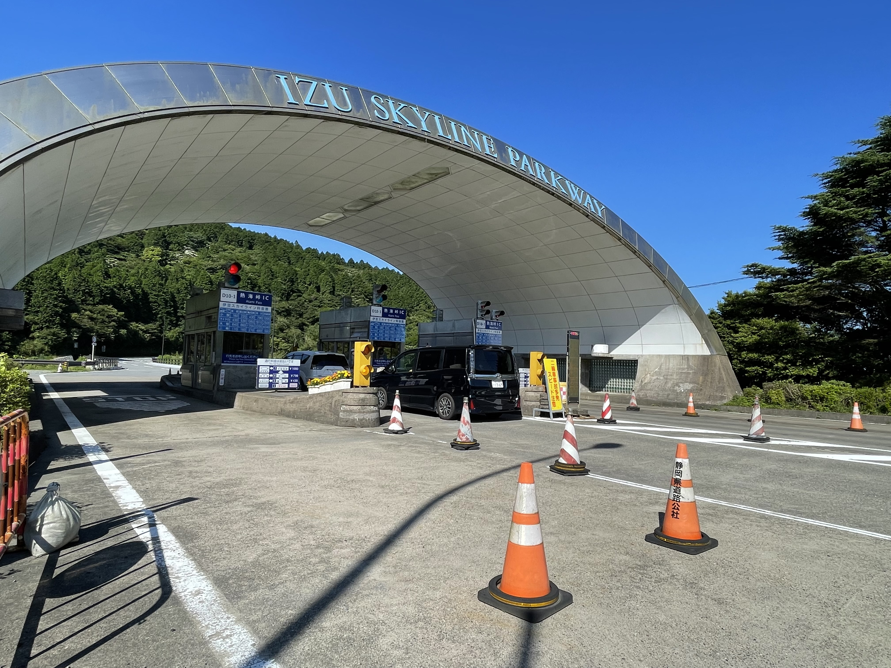
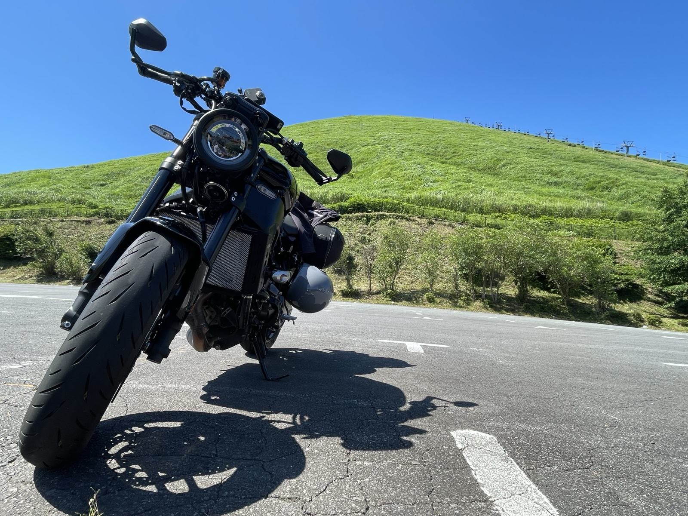
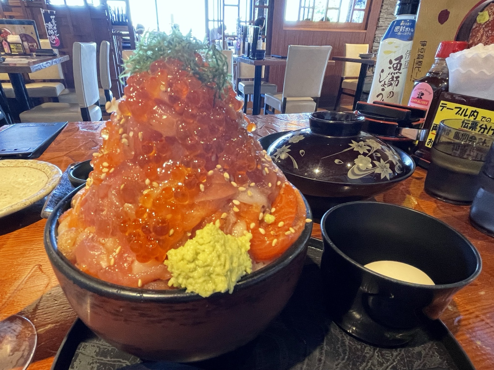
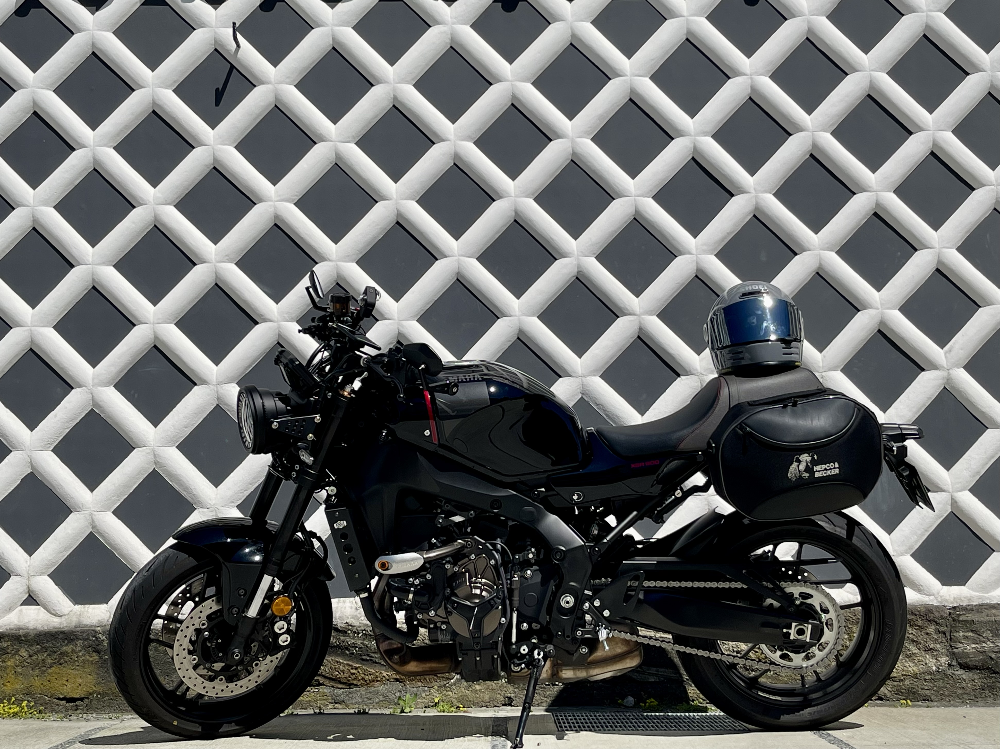
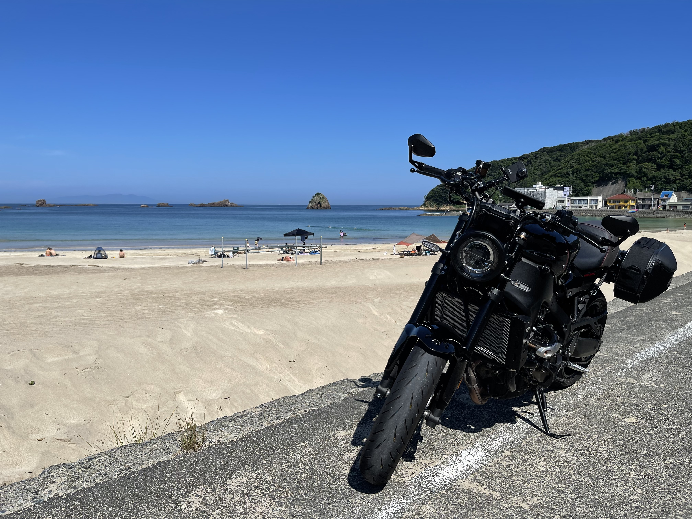
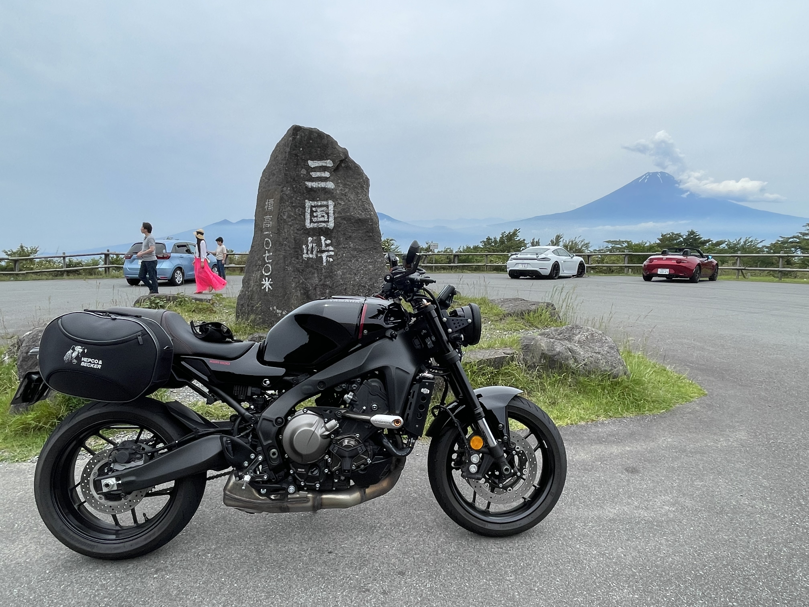

XSR900に乗り換えてから半年ほど経った6月、伊豆半島へ1泊2日のツーリングに行った。特に強いテーマがあったわけではない。走りたい道があって、泊まれる宿があって、それで十分だった。
1日目 — 伊豆半島を南へ
千葉から出発し、首都高を抜けて小田原方面へ向かう。流れに乗れば東京は意外とすんなり通り過ぎられる。小田原を過ぎると、山がちな地形になり始め、道の性格が変わってくる。
途中、伊豆スカイラインの入口ゲートに立ち寄った。伊豆半島の稜線を走る有料道路で、天城高原から玄岳まで続く。また改めて走りたいと思いながら通過した。

伊東付近まで来て、大室山に立ち寄った。噴火でできた直径300mほどのすり鉢状の山で、山頂までリフトで上がれる。草に覆われた稜線をぐるりと一周できる。伊豆にこういう場所があるとは知らなかった。
ふもとの伊豆高原ビール本店で昼食をとった。海鮮丼を頼んだら、具が丼からはみ出すほど盛られて出てきた。ボリュームに少し戸惑ったが、うまかった。


伊豆半島の東岸を南下した。国道135号は海を見ながら走れる区間が多い。梅雨の晴れ間だったこともあり、海の色が濃くて気持ちよかった。熱川、稲取と過ぎて、下田市まで走った。幕末の開港地として知られる港町で、海沿いの雰囲気が穏やかだった。


そのまま半島の西側へ折り返す。宿は西伊豆に取った。夕飯に海鮮を食べた。1日目はそれだけで十分だった。
2日目 — 芦ノ湖スカイライン
翌朝、宿を出て北へ向かった。半島の付け根から箱根方面へ上がり、芦ノ湖スカイラインへ入った。
結論から言うと、ここが今回のツーリングで一番よかった。標高が高く、コーナーが連続する稜線上の道で、視界が開けている区間では富士山が見えた。梅雨の晴れ間という条件も良かったが、それを差し引いても走っていて気持ちのいい道だ。
交通量が少なく、ペースを乱されない。路面は比較的きれいで、XSR900のハンドリングが素直に乗せてくれる。ずっとこの道を走り続けていたいと思いながら、終点まで走った。
芦ノ湖スカイラインを出て、帰りに三国峠へ寄った。静岡・神奈川・山梨の三県が接する峠で、富士山が正面に見える。この日は雲がかかっていたが、山の輪郭はわかった。

そのまま東名・首都高を乗り継いで千葉へ帰った。帰路は長く感じたが、それでも悪い気はしなかった。
芦ノ湖スカイラインは、千葉からだと日帰りでは少し遠い。ただ、1泊するだけで全く違う旅になる。「1泊するだけでこんなに走れる」という発見が、今回の一番の収穫だったかもしれない。